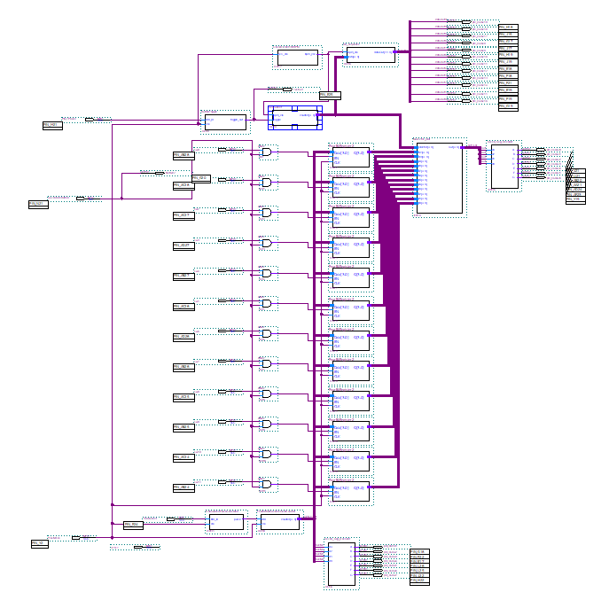
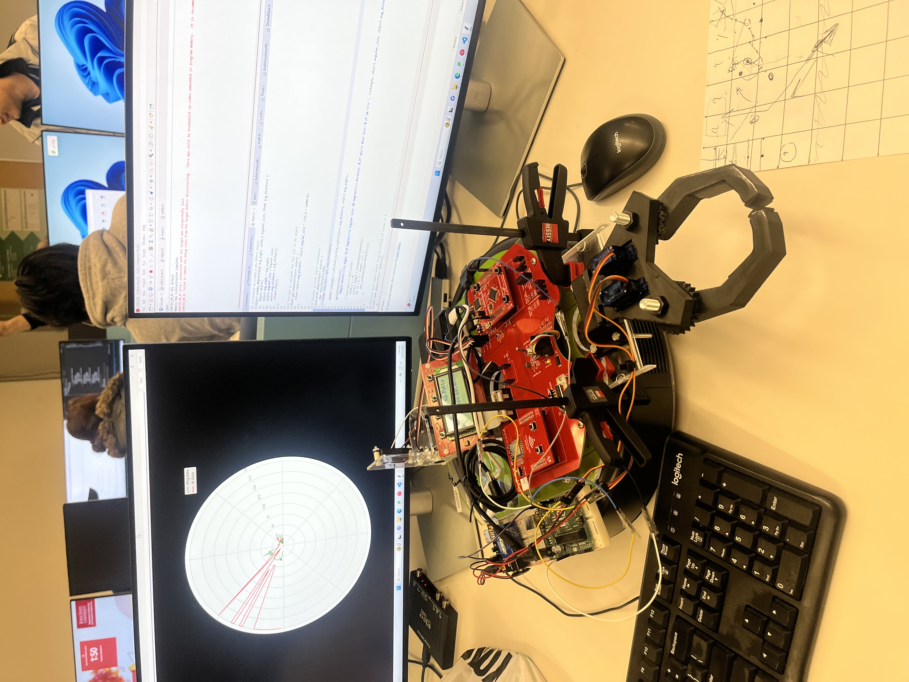
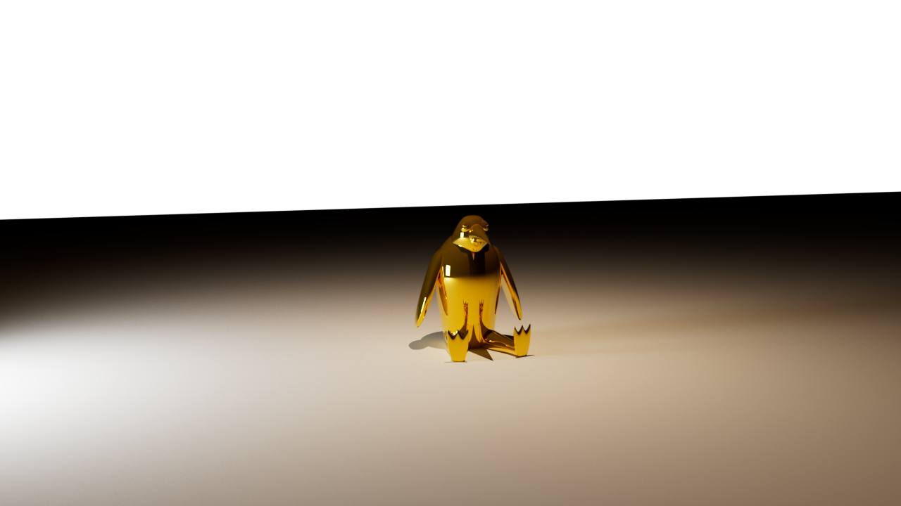
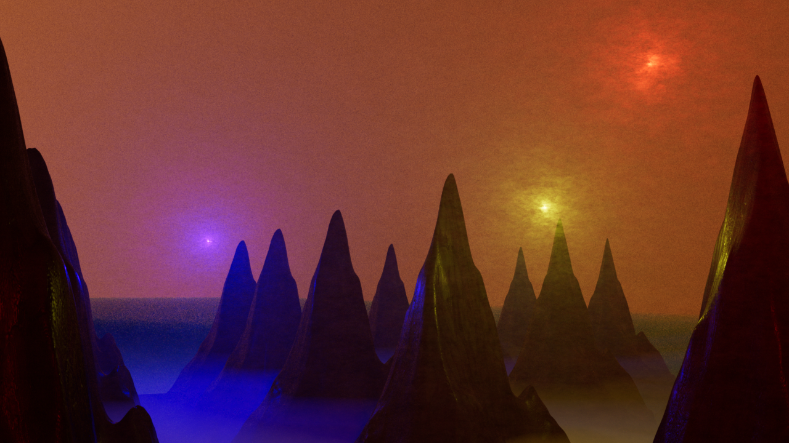
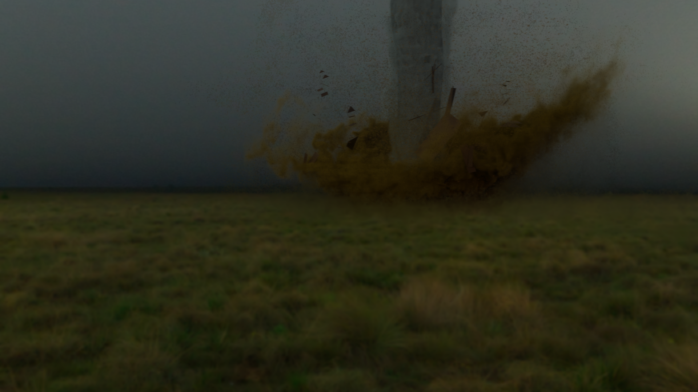
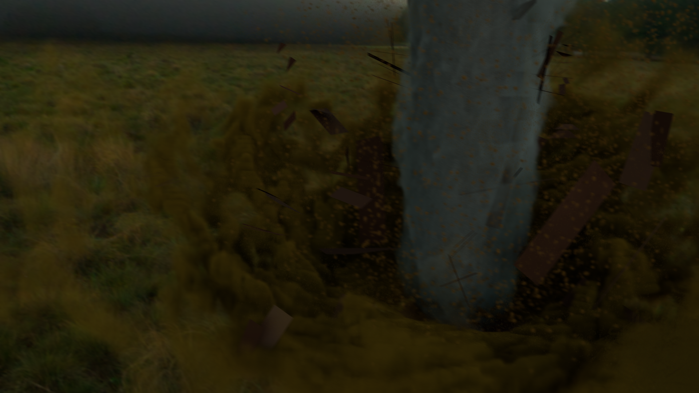

About Me
I am a soon-to-be graduate of Iowa State University with a Bachelor of Computer Engineering degree. I am passionate about new technology, music, and art. I enjoy learning new things. I don't believe too much in technical jargonning, so I'll let my work speak for itself.
- Knowledge of varying coding languages: Java, C, C++, Python, VHDL, HTML, CSS, JavaScript, LabVIEW, and more
- Embedded Systems programming
- Embedded Systems design and development
- Computer Architecture
- FPGA development
- Circuits and design
- Creative digital media
- Machine Learning and AI
- Software applications such as Adobe Photoshop, Blender, ProTools, AbletonLive, Quartus Prime, Vivado, Vitus, Microsoft Word/Excel, Fusion 360, Cinema 4D, LtSpice, etc.
Academics
Iowa State University, Ames IA
->Bachelor of Computer Engineering with a minor in Music Technology
GPA: 3.38 (current)
Des Moines Area Community College, Ankeny IA
->Engineering (Pre-Engineering)
Cumulative GPA: 3.02 (2022 Summer)
Work History

Ames National Laboratory
->Software Developer / ALAB Assistant (Paid-Internship)
[March 10, 2025 - August 23, 2025]
Software Developer / ALAB Assistant (Paid-Contributor)
[August 23, Present]
- Collaborated with a team to develop RxnRover, an open-source lab automation software platform.
- Updated the RxnRover website, including API documentation, tutorials, and a plugin catalog using Sphinx.
- Developed RxnRover plugins and device drivers to control and communicate with lab equipment using LabVIEW.
- Incorporated user feedback to enhance usability and implement new features.
- Managed 45+ GitHub repositories as a member of the RxnRover organization.
- Provided technical support to scientists in lab environments, resolving hardware and software issues.
- Responded quickly and effectively to fix bugs and minimize lab downtime.
- Contributed to multiple experiments in collaboration with Ames and Oak Ridge National Laboratories.
Projects
- Personal
- Engineering
- Audio
- Artwork
Fallout Terminal Emulator
Details



Binary Bond
Sound Collage
Silly Funny Ringtone
Getting Wine Drunk at a Restaurant and Passing Out
Sea of Tranquility









Reflections & Writings
Reflection on General Education at ISU
A written reflection on the value and experience of general education requirements at Iowa State University.
Read PDF ->Cumulative Reflection from my Experience at Iowa State University
A personal narrative exploring cumulative academic and personal growth throughout the university experience.
Read PDF ->The Ethics of AI: A Case Study
An examination of ethical considerations and real-world implications surrounding artificial intelligence.
Read PDF ->Contact Me
Have a question or want to get in touch? Fill out the form below and it will open in your email client ready to send.